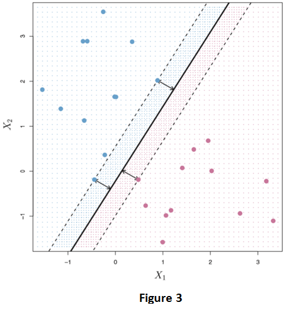
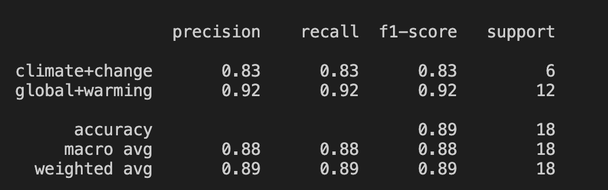

SUPPORT VECTOR MACHINE (SVM).
What is Support Vector Machine (SVM)?
Support Vector Machine (SVM) is a type of supervised machine learning algorithm that essentially requires a labled training set and an unlabeled testing set which the algorithm makes predictions on. The SVM takes data points and outputs it onto a two dimension hyperplane that seperates the training testing points based on a decision boundry into the n-number of classifiers. One of the advantages of the SVM classifier is the kernal, which allows the algorithm to classify into n-dimensional space to fit the dataset. An image below can be seen on how SVMs holistically work.

Source: An Introduction to Statistical Learning with Applications in R, book by Robert Tibshirani, Gareth James, Trevor Hastie and Daniela Witten.
Python: Text Data - Cleaning NewsAPI Data
The raw data collected can be found below. The news articles are labeled by the key word used to generate the articles (labels).

This is a screenshot of the raw data gathered from the NewsAPI.
Download python_uncleaned.csvThe cleaning has been done via removing stop words and any meaningless words. Then using Count Vectorizer, a cleaned csv file was created created with relevant words as the variables (columns) and the topics as the labels (first column for each row).

This is a screenshot of the cleaned NewsAPI data.
Download python_cleaned.csvThree word clouds were generated to visualize the data pulled from each topic: climate change, global warming, and renewable energy.

Wordcloud for climate change.

Wordcloud for global warming.
The code for creating the dataset and the wordclouds can be found below:
CODE: Python - NEWS API Cleaning
Python - SVM Results
The code for the three SVM kernals and the accuracy can be found below (incldues both NB and SVM; commented out the SVM portion):
CODE: Python - SVM
Linear Kernal:

Linear Kernal SVM Confusion Matrix.

Linear Kernal SVM Results.
Polynomial Kernal:

Polynomial Kernal SVM Confusion Matrix.
Polynomial Kernal SVM Results.
Radial Basis Function (RBF) Kernel:

Radial Basis Function (RBF) Kernel Confusion Matrix.

Radial Basis Function (RBF) Kernel SVM Results.
The Linear kernal, Polynomial kernal, and RBF Kernal, suprisingly gave the same accuracy of 89%. Well, in retrospect this seems counter intuitive as I made sure that the code was unique for each by the label. However, the results are not that suprising if you take into account the less disparity in the dataset and how monotone the data is, any form of SVM would yield the same result.
Python - SVM Conclusion
In summary, it has been demonstrated how SVM can be a really powerful classifier for text data line news headlines. With other types of data, such as record data, it may not be that much of success. For this specific data, it can be safely assumed to improve the result of 89% accuracy, by incorporating other tuning parameters for example by getting variables which describe the voltatility of the temperature. For text data, it can be seen from the results section that the SVM did really well in classifying the various classes, all of which have the same accuracy. All in al, it can be infered that SVM models can be immensly usefl to hlpe predict news classifications on climate change and global warming.
SVM WITH R
R - Code
The code for performing SVM classificaton in R can be found below:
CODE: R - SVM
R - SVM Data
CODE: R Cleaning - Country
The data for creating the decision trees in R was gathered from the data cleaining tab, specifically the numeric section. This raw data showcases the global land temperature by country. The dataset spans across over a hundred countries as well as weather points dating back from the 1750's. The temperature data presented here is in Celsius. Feature extraction was performed to get the data of countries USA and India. To accomplish this in R, the data was read in by getting the country code 'USA' and 'India'. Next, the date data was converted to months and years as features in the dataset along with the month number correlating to the abbreviation. Then, applying another feature extraction, the celsius data was converted to fahrenheit (by the formula 9/5*C + 32). Next, using a simple key of very cold to very hot, based on the fahrenheit scale, a feature was made to determine the "sense" of the weather. Finally, this transform was outputted as a csv.
USA and India climate dataset.

Download small_sample.csv
R - SVM Results
Linear Kernal:

Linear Kernal SVM Confusion Matrix.
Polynomial Kernal:

Polynomial Kernal SVM Confusion Matrix.
Radial Basis Function (RBF) Kernel:

Radial Basis Function (RBF) Kernel Confusion Matrix.
Results:
The linear kernal got a prediction accuracy from the test sets of 23.3%. The polynomial kernal achived a preduction accuracy of 23.3% accuracy as well.
R - SVM Conclusion
There were three different kernal used to perform SVM: Linear, Polynomial, and Radial Basis Function (RBF). The overall accuracies for these three different SVM algorithms were dissapointing to say the least. The overall performance by the SVM done by the linear and polynomial. This gives us the conclusion that the accuracies based on the category to the average temperature based on the country doesn't have a strong correlation. In other words, how the datapoints are split from the India's and USA's temperatures can't be distinctly categorized by the category of the temperature they're in. This, at the end, makes sense, as the temperature variance between the two countries are very different, as they're from two different climate regions.